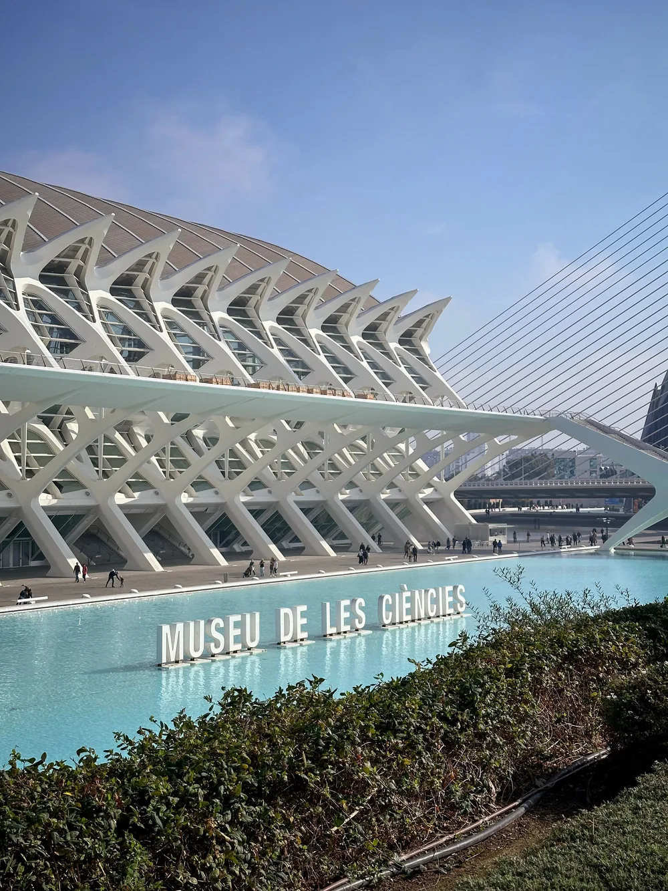

Museu de les Ciències Príncipe Felipe
Museo de ciencia dentro de la Ciutat de les Arts i les Ciències, con un diseño futurista firmado por Santiago Calatrava que llama la atención antes incluso de entrar. Sus salas están pensadas para tocar y experimentar, con exposiciones sobre biología, física y tecnología adaptadas a distintas edades. Es un buen punto de partida para dedicar toda una mañana o tarde al complejo, ya que está junto al Oceanogràfic y al Hemisfèric.
Av. del Professor López Piñero, 7, 46013 Valencia Visitar web oficial